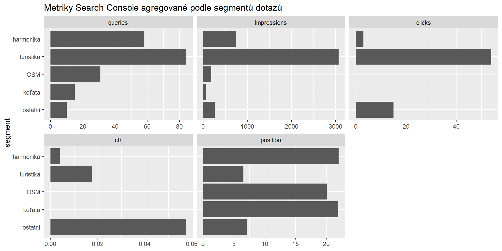

queries <- search_analytics(
siteURL = "http://www.marekp.cz/",
dimensions = "query"
)
queriesSEO + R + OpenIA API = ❤️
Marek Prokop & ChatGPT
PROKOP software s.r.o.
20. 3. 2024
Začnu praktickým příkladem
- Načtu dotazy ze Search Console.
- Rozdělím je do několika tematických segmentů.
- Vyrobím report s několika grafy a slovním shrnutím.
Načtu dotazy ze Search Console
Dotazy rozdělím do segmentů
Segmenty zobrazím s příklady dotazů
| segment | queries |
|---|---|
| harmonika | harmonica 3rd position chart, chords on a c harmonica, harmonica position chart, chords harmonica, a harmonica layout, harmonica layout, harmonica overblow chart, harmonica map, harmonica chords chart, harmonica second position chart, diatonic harmonica notes, diatonic harmonica notes chart, diatonic harmonica scale, blues harmonica key chart, harmonica note layout, g harmonica chords, c harmonica chart, g harmonica layout, harmonica chord chart, blues harp scale |
| turistika | okružní turistické trasy, dálkové pochody, rumcajsova stezka, dálkové trasy čr, restaurace na zlaté vyhlídce, zlatá stezka českého ráje na kole, severní stezka českem mapa, zlatá stezka českého ráje etapy, hrad trosky mapa, pěšky kolem česka, český ráj trasy, český ráj mapa, riegrova stezka uzavřena, mapa český ráj, penzion zlatá stezka, turistické stezky mapa, stezky českem, zlatá stezka mapa, zelené údolí kemp, zlata stezka |
| OSM | open streeet map, osm maps, anglicky osm, mapy osm, open street map, open street mapo, open street maps, openstreetmap.org, .osm, r35 mapa, osm, openstreetmap, open street map editor, openstret, openstreetmap gpx, mapy open street, open street maps wms, osm anglicky, open street mapa, osm open street maps |
| koťata | daruji koťata liberec, zrzavý kocourek, daruji koťátko, daruji kotatka, zrzavé kotě daruji, daruji kotatko, koťatko, kotatka daruji, daruji kotě karlovarský kraj, daruji kotě liberec, kotě daruji, jičín, daruji kotě, kdo daruje kotě, koťátka |
| ostatní | marekp, suché skály okruh, drábské světničky uzavření, trasa e6, trasa e4, marek prokop, trasa e8, klokockie skaly, slevomaty, trasa e10 |
Segmenty mohu i agregovat
| Metriky Search Console agregované podle segmentů dotazů | |||||||
| segment | queries | impressions | clicks | ctr | position | impressions_per_query | clicks_per_query |
|---|---|---|---|---|---|---|---|
| harmonika | 58 | 742 | 3 | 0,40% | 22,01 | 12,79 | 0,05 |
| turistika | 84 | 3 070 | 54 | 1,76% | 6,51 | 36,55 | 0,64 |
| OSM | 31 | 179 | 0 | 0,00% | 20,11 | 5,77 | 0,00 |
| koťata | 15 | 62 | 0 | 0,00% | 21,95 | 4,13 | 0,00 |
| ostatní | 10 | 261 | 15 | 5,75% | 7,09 | 26,10 | 1,50 |
Nebo z nich vykreslit různé grafy
Vývoj v čase

Z toho všeho můžu udělat report pro klienta
Jak to funguje
Text embeddings
- Každé slovo, věta či delší text jde reprezentovat vektorem v n-rozměrném prostoru.
- Tento vektor se nazývá word (nebo text) embedding.
- Vektory více textů jsou v n-rozměrném prostoru umístěny na různých místech a svírají různé úhly.
- Vektory, které jsou na podobných místech a míří hodně podobným směrem, pravděpodobně reprezentují významově hodně podobné texty.
- Podobnost vektorů jde spočítat klasickou geometrií. Já používám cosinovou podobnost.
Text embeddings v OpenAI API
- Open AIP API nabízí 3 modely pro text embeddings. Já používám text-embedding-3-small.
- Model text-embedding-3-small dokáže podle dokumentace OpenAI vygeberovat za 1 USD text embeddings pro 62 500 stránek o 800 tokenech. Za přípravu této přednášky jsem utratil $0.02 :-)
- Více se dočtete v dokumentaci k text embeddings OpenAI API.
marek prokop jako vektor :-)
[1] -2.222297e-02 8.169613e-03 1.670442e-02 -5.826936e-02 -2.591553e-02
[6] 3.297602e-02 1.092212e-03 2.805261e-02 2.110032e-03 -7.266086e-02
[11] 3.911676e-02 -1.893619e-02 1.658269e-02 -6.441685e-03 1.397220e-02
[16] 9.691270e-03 -4.179487e-02 -5.072193e-03 -3.787237e-02 1.946370e-02
[21] -1.970716e-02 -8.122272e-03 2.634835e-02 9.359887e-03 -3.110945e-03
[26] 2.583437e-02 1.605518e-02 -3.538362e-02 2.421127e-02 1.325533e-02
[31] -1.884151e-02 -2.802556e-02 -9.113040e-04 -4.587968e-02 -1.107091e-02
[36] -8.726878e-02 4.223446e-03 1.815169e-02 -2.364318e-02 1.040138e-02
[41] 1.239644e-02 1.936901e-02 3.430155e-02 3.819700e-02 1.590640e-02
[46] 3.730429e-02 1.754303e-02 -2.110032e-02 5.989246e-02 3.835931e-02
[51] -1.504074e-02 8.927060e-03 7.466269e-02 4.211949e-02 -3.554593e-02
[56] -4.081425e-03 1.351909e-02 3.148818e-02 4.487877e-02 2.012646e-02
[61] 4.160551e-02 -3.535657e-02 -2.376492e-02 2.443106e-03 -6.654718e-02
[66] -1.752950e-02 -3.560003e-02 2.064044e-02 -2.261522e-02 2.732221e-02
[71] 5.511783e-03 -1.739424e-02 -8.588914e-03 -1.169310e-02 -6.443714e-02
[76] -5.616609e-03 2.986507e-02 5.331889e-02 -5.913501e-02 4.355323e-02
[81] 1.220708e-02 5.183781e-03 -1.863186e-03 -2.645656e-02 -2.522571e-02
[86] -3.083894e-02 -1.132113e-02 -5.174990e-02 4.495992e-02 1.954485e-02
[91] -5.799884e-02 1.629865e-02 3.868393e-02 4.052344e-02 6.167787e-02
[96] -1.234910e-02 1.444561e-02 -8.250767e-03 1.743144e-03 -4.962296e-04
[101] -2.440063e-02 -2.630777e-02 5.231122e-03 2.165827e-03 -2.848544e-02
[106] 4.945050e-02 -2.537449e-02 -1.746187e-02 1.474317e-02 6.930645e-02
[111] -6.973928e-02 1.144963e-02 -4.014472e-02 3.830520e-02 5.689310e-04
[116] -2.465086e-03 2.310215e-02 -3.275960e-02 -3.825110e-02 -1.088154e-02
[121] 9.927973e-03 3.657389e-02 -5.396814e-02 -1.659622e-02 4.977512e-03
[126] 1.493254e-02 2.738984e-02 -1.245054e-02 -1.070571e-02 -5.875628e-02
[131] -5.118181e-02 -6.335507e-02 -1.195347e-03 -7.391876e-03 -6.503228e-02
[136] -1.207858e-02 -2.309539e-03 8.054643e-03 3.124471e-02 -8.331923e-03
[141] 2.049166e-03 2.247996e-02 -1.408041e-02 3.416629e-02 -3.481554e-02
[146] 1.493254e-02 1.330943e-02 4.861190e-02 4.676562e-03 6.573563e-03
[151] 7.926147e-03 -1.633923e-02 -2.421127e-02 9.569538e-03 -3.208331e-02
[156] 1.113854e-02 1.805701e-02 -2.767388e-02 -3.711493e-02 5.934466e-03
[161] 2.899942e-02 5.561829e-02 -1.585060e-03 1.309978e-02 2.729516e-02
[166] 5.350826e-02 -7.206572e-02 8.284582e-03 -2.743042e-02 9.008215e-03
[171] -3.794000e-03 2.941872e-03 -1.807053e-02 2.131674e-02 -3.029790e-02
[176] -1.126027e-02 -1.318770e-02 1.939607e-02 -2.734927e-02 -2.032935e-02
[181] 4.568355e-03 4.306630e-02 4.874716e-02 2.644303e-02 3.100124e-02
[186] 5.663949e-03 1.910526e-03 -1.837825e-03 -1.338383e-02 -1.459439e-02
[191] 3.251614e-02 -2.023467e-02 -1.233388e-03 4.920704e-02 1.389105e-02
[196] -2.344030e-02 4.390490e-02 -1.999120e-02 -2.414364e-02 -4.103743e-02
[201] -1.813816e-02 -5.633516e-03 2.399486e-02 -4.324890e-03 -2.526628e-02
[206] 2.786325e-02 -4.671828e-02 -1.855746e-02 -3.478848e-02 4.010414e-03
[211] 6.102863e-02 6.218509e-03 -2.028877e-02 -3.381462e-02 5.241267e-03
[216] 2.997328e-02 8.007302e-03 2.916173e-02 3.900855e-02 1.995063e-02
[221] -6.108273e-02 1.072600e-02 5.772832e-02 -1.913908e-02 2.498224e-02
[226] 1.493254e-02 2.314273e-02 -4.378994e-03 -1.481080e-02 -3.374699e-03
[231] -3.054137e-02 1.439150e-02 1.324181e-02 3.094714e-02 2.260169e-02
[236] 2.100564e-02 -2.024820e-02 -4.114563e-02 3.040611e-02 -5.163493e-03
[241] -5.004564e-03 -7.554186e-03 -1.619044e-02 -3.422040e-02 -2.563148e-03
[246] 2.389003e-03 -1.309471e-03 -8.331923e-03 -2.671355e-02 -5.231122e-03
[251] 5.020795e-02 -1.180130e-03 -2.421127e-02 -9.278732e-03 -1.570351e-02
[256] 1.496297e-03 2.154668e-02 3.197510e-02 1.853041e-03 -2.344030e-02
[261] 3.849457e-02 -1.146316e-02 -1.747540e-02 5.258174e-03 -3.550535e-04
[266] -1.991005e-02 -3.289487e-02 9.914447e-03 2.139789e-02 1.429513e-03
[271] 6.330097e-02 -2.625367e-02 -1.286984e-02 2.469820e-02 -9.376118e-02
[276] 3.679031e-02 4.734047e-02 4.233591e-02 -2.707875e-02 -3.594494e-03
[281] -1.836134e-03 -1.923376e-02 -1.942650e-03 -3.389578e-02 -9.048792e-03
[286] 1.429682e-02 -6.614140e-03 7.942378e-02 3.324654e-02 -2.759273e-02
[291] 2.035640e-02 -5.307543e-02 3.681736e-02 -1.162547e-02 8.483412e-02
[296] -3.833225e-02 -1.079363e-02 -8.634902e-02 -3.265140e-02 1.175058e-03
[301] 4.945050e-02 1.073952e-02 5.572650e-02 -1.424272e-02 -4.544685e-02
[306] 4.782740e-02 4.368849e-02 -6.676359e-02 -1.409393e-02 -1.094917e-02
[311] -3.908970e-02 -1.185541e-02 -6.703410e-02 -3.086599e-02 1.275657e-03
[316] -5.551008e-02 6.221890e-02 -1.509485e-02 6.627666e-04 -8.429309e-02
[321] -4.390490e-02 -7.498731e-02 -3.557298e-03 -2.480641e-02 -2.342677e-02
[326] -2.877624e-03 -5.185810e-02 1.585229e-02 5.724139e-02 -6.120447e-03
[331] -3.351705e-02 2.338281e-03 -4.490582e-03 -4.477056e-02 3.476143e-02
[336] 3.031481e-03 4.444594e-02 3.703377e-02 5.339329e-03 -7.107833e-03
[341] -3.976599e-02 -2.560443e-02 -1.448618e-02 -1.456734e-02 1.218003e-02
[346] -1.963953e-02 8.175023e-02 -1.738071e-02 -4.325566e-02 1.504074e-02
[351] -4.168666e-02 2.869171e-03 -2.706860e-03 3.530246e-02 3.554593e-02
[356] -1.320799e-02 2.835018e-02 -3.605991e-02 1.218679e-02 3.330064e-02
[361] -3.993506e-03 3.376052e-02 -2.591553e-02 2.112738e-02 9.623641e-03
[366] 4.325566e-02 -2.956750e-02 -4.157846e-02 1.455381e-02 8.575388e-03
[371] -2.548270e-02 1.309302e-02 -4.693469e-02 7.019915e-03 -8.326513e-02
[376] 1.286984e-02 -1.889561e-02 4.917999e-02 -4.798295e-03 2.283163e-02
[381] 1.816521e-02 -9.312547e-03 -3.861630e-03 -3.048726e-02 -8.981164e-03
[386] -1.177425e-02 -1.313360e-02 4.333682e-02 -2.829608e-02 2.108680e-02
[391] 6.027118e-02 -2.453251e-03 2.775504e-02 -2.772799e-02 5.174990e-02
[396] -1.043519e-02 5.691677e-02 8.705236e-02 -1.958543e-02 4.095627e-02
[401] -2.288574e-02 -4.798295e-03 3.773712e-02 4.655597e-02 -6.081222e-02
[406] 7.080782e-03 1.140398e-03 2.456294e-02 3.078483e-02 -3.675649e-03
[411] 3.376390e-03 -4.817907e-02 1.506780e-02 2.299394e-02 2.883711e-02
[416] -3.211036e-02 -1.844926e-02 -9.745373e-03 3.432860e-02 2.771108e-03
[421] -1.515740e-03 -1.811111e-02 -5.632163e-02 1.601460e-02 -3.165048e-02
[426] 1.613634e-02 1.244378e-02 2.791735e-02 3.689852e-02 -1.107091e-02
[431] -6.865720e-02 -2.467115e-02 -1.081392e-02 6.647955e-03 -5.864808e-02
[436] -7.320190e-02 3.295235e-03 9.353125e-03 2.058634e-02 -2.153315e-02
[441] -2.390694e-03 1.555473e-02 -1.288337e-02 -2.385960e-02 1.162547e-02
[446] -5.034997e-03 4.974807e-02 3.779122e-02 -3.280018e-03 1.200419e-02
[451] 2.611841e-02 -2.104622e-02 -4.602170e-03 -6.959049e-03 4.550095e-02
[456] -1.650154e-02 3.876508e-02 5.042436e-02 -6.008858e-03 -4.940316e-03
[461] 3.906265e-02 -8.000540e-03 -7.844992e-03 -7.412165e-03 -1.297805e-02
[466] 2.805261e-02 1.568998e-02 -5.697087e-02 3.760186e-03 -3.035200e-02
[471] 4.087511e-02 7.689445e-03 -7.022621e-02 -1.320799e-02 1.027119e-03
[476] 8.764749e-03 4.132147e-03 -2.837723e-02 -2.940519e-02 -5.072193e-02
[481] -3.922496e-03 -3.538362e-02 9.900921e-03 6.275994e-02 -1.908497e-02
[486] 5.540188e-02 2.197950e-02 1.218679e-02 -6.303045e-02 -1.643391e-02
[491] 1.934196e-02 5.860074e-03 1.497311e-02 -1.563588e-02 -9.583063e-03
[496] -4.114563e-02 1.368816e-02 -1.945017e-02 2.161431e-02 -3.892063e-03
[501] 2.506340e-02 -1.587935e-02 -3.300307e-02 1.750245e-02 2.383255e-02
[506] -1.678558e-02 -4.690764e-02 3.779122e-02 6.597233e-03 5.967604e-02
[511] -1.399925e-02 2.884387e-03 4.909883e-03 -2.364318e-02 2.824197e-02
[516] 1.146316e-02 -3.486964e-02 3.611401e-02 -6.443714e-02 -1.121969e-02
[521] -2.740337e-02 -1.383694e-02 -3.340885e-02 -2.325093e-02 1.025259e-02
[526] -6.492407e-04 -2.326446e-03 -3.633043e-02 8.805327e-03 -6.035910e-03
[531] 2.772799e-02 2.258817e-02 2.850573e-03 4.017177e-03 -5.007946e-03
[536] 1.127379e-02 -3.956310e-03 3.411219e-02 1.029993e-02 -1.126027e-02
[541] 1.266019e-02 1.487843e-03 -2.426537e-02 -5.609846e-03 -3.194805e-02
[546] -3.205626e-02 3.838636e-02 -9.468094e-03 -1.255199e-02 2.959456e-02
[551] 5.015385e-02 -1.874683e-02 2.216548e-03 -1.192980e-02 3.457207e-02
[556] 1.506780e-02 1.705102e-03 3.706082e-02 1.285801e-03 -4.252527e-02
[561] -1.870625e-02 -5.764336e-05 1.727251e-02 -1.485307e-03 6.147498e-03
[566] 4.263347e-02 3.139688e-03 -9.995602e-03 -7.878806e-03 3.357116e-02
[571] 2.929699e-02 -7.946436e-04 -2.196598e-02 -7.612348e-02 1.890914e-02
[576] 3.028099e-03 3.971104e-04 -2.807966e-02 4.173992e-04 -4.276873e-02
[581] -2.413011e-02 1.651506e-02 -1.861157e-02 1.237615e-03 3.908970e-03
[586] 9.109659e-03 1.462144e-02 1.319447e-02 -6.353767e-03 2.130321e-02
[591] 2.061339e-02 -1.092212e-02 -4.106448e-02 -3.553917e-03 8.548336e-03
[596] -1.045548e-02 1.056369e-02 2.613194e-02 2.954045e-02 8.298108e-03
[601] -1.679910e-02 1.878740e-02 -4.044229e-02 -1.518953e-02 3.113650e-02
[606] 7.276907e-03 -6.516078e-03 -3.784532e-02 3.627633e-02 2.692996e-02
[611] 4.149730e-02 6.319276e-02 -9.129948e-04 -3.146112e-02 -2.989212e-02
[616] 1.183512e-02 -7.401175e-04 -2.112738e-02 8.257531e-03 -7.303958e-03
[621] -3.110945e-02 -1.627159e-02 2.832313e-02 2.943225e-02 -3.033171e-03
[626] 2.383255e-02 -5.619990e-03 -1.723193e-02 2.469820e-02 1.855746e-02
[631] 5.288607e-02 -3.419334e-02 -8.876338e-04 7.547423e-03 -1.543299e-02
[636] 3.777093e-03 4.698880e-02 1.301863e-02 2.647009e-02 -4.966691e-02
[641] 2.105975e-02 1.627159e-02 -4.117268e-02 -1.434585e-03 3.240793e-02
[646] -5.023500e-02 1.709667e-02 2.273695e-02 -6.664862e-03 -7.777363e-03
[651] 8.007302e-03 -2.901295e-03 3.641412e-04 3.406823e-03 7.601527e-03
[656] -4.446622e-03 -1.310317e-03 -2.039698e-02 2.337267e-02 2.410306e-02
[661] -3.121766e-02 1.978832e-02 3.976599e-02 -2.655124e-02 -4.092922e-02
[666] -6.103539e-03 -2.664592e-02 1.805701e-02 -5.891859e-02 1.991005e-02
[671] 1.559530e-02 1.190275e-02 8.122272e-03 2.537449e-02 5.001183e-03
[676] 1.188795e-04 -1.048929e-02 -2.057282e-02 -5.315658e-02 4.523044e-02
[681] -3.631690e-03 2.297703e-03 -2.429242e-02 -9.549249e-03 -1.077334e-02
[686] -1.294424e-02 7.777363e-03 2.106651e-03 -7.278597e-04 -1.173367e-02
[691] -2.937814e-02 -2.051871e-02 4.682649e-02 -2.011294e-02 -1.564941e-02
[696] 1.606194e-03 4.710377e-03 -5.180400e-02 7.696208e-03 -5.445506e-02
[701] 3.303012e-02 6.204983e-03 -2.018057e-02 -5.464442e-03 -1.824637e-02
[706] -4.341797e-02 -5.248029e-03 5.789063e-03 2.433300e-02 1.897676e-02
[711] 1.103033e-02 -6.434923e-03 2.050519e-02 -3.454163e-03 -2.135732e-02
[716] 4.017177e-02 -4.328271e-02 2.011970e-03 1.823284e-02 -3.568119e-02
[721] -5.677475e-03 1.698847e-02 2.068102e-02 -1.739424e-02 2.280458e-02
[726] -1.505427e-02 -3.895444e-02 1.391810e-02 -1.020525e-02 -2.629425e-02
[731] 4.985628e-02 -9.163762e-03 -2.028877e-03 -2.626720e-02 1.059074e-02
[736] 1.201095e-02 2.607784e-02 1.018496e-02 -2.126940e-03 1.389105e-02
[741] -1.678558e-02 -2.913468e-02 1.792175e-02 3.370642e-02 -1.183512e-02
[746] -1.474317e-02 2.614547e-02 -3.903475e-04 2.423832e-02 1.303892e-02
[751] -4.182192e-02 1.112501e-02 -1.807053e-02 2.256111e-02 -1.290366e-02
[756] -9.760252e-02 -2.669664e-03 -1.128732e-02 1.190951e-02 1.057045e-02
[761] -2.624015e-03 2.260169e-02 -4.250498e-03 -4.872011e-02 1.351909e-02
[766] -8.210190e-03 4.279579e-02 -1.970716e-02 -1.140905e-02 -4.321509e-03
[771] 2.430595e-02 1.555473e-03 2.948635e-02 -1.176073e-02 5.783653e-02
[776] 2.853954e-02 -2.265579e-03 -6.370675e-03 2.412673e-03 1.694789e-02
[781] -1.212592e-02 -1.465864e-03 -6.915090e-03 2.458999e-02 -4.144320e-02
[786] -2.264227e-02 2.829608e-02 -1.602813e-02 4.761098e-03 -1.566293e-02
[791] 4.027322e-03 4.550095e-02 -2.582084e-02 8.122272e-03 2.058634e-02
[796] -3.100801e-03 9.927973e-03 8.940586e-03 1.859804e-02 -7.479794e-03
[801] -1.926081e-02 4.176782e-02 2.605078e-02 2.937814e-02 2.335914e-02
[806] 7.107833e-03 -2.082981e-02 3.784532e-02 -4.439860e-03 1.287661e-02
[811] -5.596320e-03 -5.285225e-03 -6.113683e-03 1.575761e-02 1.268724e-02
[816] -4.071280e-02 2.797145e-02 -1.112501e-03 -6.587088e-03 -3.270550e-02
[821] 1.335677e-02 6.208364e-03 1.196361e-02 -1.443208e-02 2.008588e-02
[826] -4.038818e-02 2.289926e-02 -2.826902e-02 1.216481e-03 5.137117e-02
[831] 4.363439e-02 -3.219152e-02 1.069895e-02 8.643017e-03 9.515434e-03
[836] -6.044363e-04 -1.608224e-02 -2.726811e-02 1.610929e-02 1.291296e-04
[841] 1.824299e-03 1.039461e-02 2.656477e-02 2.794440e-02 1.585229e-02
[846] -1.031346e-03 8.041117e-03 4.142291e-03 -9.136710e-03 2.023467e-02
[851] -1.570351e-02 -3.053460e-03 1.697494e-02 5.264937e-03 2.134379e-02
[856] -7.872044e-03 -3.594494e-03 -2.047475e-03 -1.892266e-02 2.165488e-02
[861] -3.854867e-03 -3.367936e-02 -1.158489e-02 -2.058634e-02 1.217326e-02
[866] -1.031346e-02 1.973928e-04 -1.282927e-02 4.247116e-02 1.302539e-02
[871] -6.401108e-03 -2.594258e-02 -3.127176e-02 -1.119264e-02 1.377608e-02
[876] 1.394515e-02 -3.301998e-03 2.498224e-02 3.979981e-03 1.218679e-02
[881] -3.225069e-04 -5.795826e-03 -3.173502e-03 2.837047e-03 6.005477e-02
[886] -4.670644e-04 -2.302099e-02 1.174720e-02 -3.822405e-02 1.474317e-02
[891] -1.610421e-03 -4.771919e-02 -3.689852e-02 -5.135596e-04 -9.799478e-03
[896] 2.526628e-02 2.290941e-03 3.262434e-02 -5.795826e-03 1.897676e-02
[901] 6.946876e-02 -4.314746e-03 -5.805971e-03 3.822405e-02 1.958543e-02
[906] -2.260169e-02 2.594258e-02 -1.762418e-02 3.766949e-03 -2.151963e-02
[911] -6.302200e-04 3.971189e-02 1.360024e-02 1.665032e-02 -2.250701e-02
[916] -1.836810e-02 -1.957190e-02 1.299158e-02 2.394075e-02 -1.608224e-02
[921] 1.729956e-02 -1.630710e-03 3.526865e-03 1.575761e-02 3.043316e-02
[926] 1.285632e-02 4.865924e-03 -6.083250e-03 -1.481080e-02 1.167957e-02
[931] -2.343353e-03 3.568119e-02 7.405402e-03 1.436445e-02 -2.475230e-02
[936] -1.249556e-05 2.135732e-02 -7.358907e-04 1.553782e-03 1.282420e-03
[941] 9.616878e-03 9.373413e-03 -1.401278e-02 -2.385960e-02 -9.075845e-03
[946] -1.738071e-02 -5.968281e-03 6.891420e-03 1.239644e-02 -1.884151e-02
[951] -2.093801e-02 -1.578467e-02 1.077334e-02 8.514522e-03 1.682615e-02
[956] 2.864775e-02 -2.730869e-02 -3.482906e-03 5.701145e-03 1.732999e-04
[961] -1.958543e-02 -5.058667e-02 -3.711493e-02 -1.365434e-02 -2.018057e-02
[966] 1.939607e-02 -4.155817e-03 3.149832e-03 4.253879e-03 4.081425e-03
[971] -2.345382e-02 2.099888e-03 1.402630e-02 -6.739254e-03 -3.089304e-02
[976] -4.003651e-02 -7.161937e-03 2.045108e-02 -9.204340e-03 -6.779831e-03
[981] 1.886856e-02 4.501402e-02 -1.002265e-02 4.514928e-02 -3.202921e-02
[986] -2.425185e-02 4.712405e-02 -1.383018e-03 -1.495959e-02 -2.962161e-02
[991] -1.894971e-02 9.556012e-03 2.269637e-02 -9.075845e-03 9.772425e-03
[996] -6.857605e-03 -2.926994e-02 -1.600108e-02 -9.691270e-03 3.159638e-02
[1001] 1.903087e-02 -1.537889e-02 1.184188e-02 4.160551e-02 -5.893888e-03
[1006] -1.295776e-02 -7.151793e-04 1.219862e-03 -1.480446e-04 -2.031582e-02
[1011] 1.633923e-02 4.842254e-03 4.446623e-04 -2.603726e-02 2.130321e-02
[1016] -1.363406e-02 -9.082607e-03 4.482466e-02 -9.265206e-03 -1.022554e-02
[1021] 1.378284e-02 -8.203427e-03 2.425185e-02 -1.269105e-04 2.364318e-02
[1026] 6.776450e-03 2.011294e-02 -1.970716e-02 4.477056e-02 7.445979e-03
[1031] 5.944611e-03 -6.235416e-03 -2.799851e-02 -1.828695e-02 -7.872044e-03
[1036] -1.146992e-02 -6.154261e-03 -1.719135e-02 -1.471612e-02 -8.987926e-03
[1041] 1.044195e-02 2.200656e-02 -7.858518e-03 8.473944e-03 -1.896324e-02
[1046] -1.043519e-02 1.828695e-02 8.582151e-03 1.188246e-02 1.374226e-02
[1051] 1.689379e-02 -1.616339e-02 1.448618e-02 5.400195e-03 -1.418861e-02
[1056] 9.109659e-03 1.288337e-02 -4.801676e-03 -1.441855e-02 -1.199066e-02
[1061] -2.668650e-02 1.326209e-02 -4.639366e-03 -1.286308e-02 3.917086e-02
[1066] -2.862070e-02 -1.268724e-02 -1.697494e-02 1.326209e-02 -1.731308e-02
[1071] -1.794880e-02 -5.058667e-03 2.764683e-02 1.352585e-02 -4.788151e-03
[1076] -7.702971e-03 -3.594494e-03 -2.484698e-02 4.055049e-02 7.148411e-03
[1081] 1.793866e-03 7.993776e-03 -6.198220e-03 -8.386026e-03 -2.560443e-02
[1086] -4.480437e-03 9.934735e-03 2.348425e-03 1.723193e-02 2.082981e-02
[1091] -9.738611e-03 1.897676e-02 -2.619957e-02 -3.243498e-02 -1.355290e-02
[1096] 1.300510e-02 3.594494e-03 2.607784e-02 -9.831601e-04 6.479727e-04
[1101] 2.445473e-02 5.876981e-03 1.094241e-02 -3.915733e-03 -1.524363e-02
[1106] -2.905352e-02 -9.055556e-03 -5.386669e-03 -1.296452e-02 -2.845838e-02
[1111] -2.430595e-02 1.220708e-02 3.963074e-03 -2.127616e-02 3.465322e-02
[1116] 4.426334e-03 -2.962161e-02 -1.296452e-02 -1.995063e-04 8.210190e-03
[1121] -3.481554e-02 -2.532039e-02 4.784769e-03 -1.757008e-02 1.136848e-02
[1126] 1.004971e-02 1.802996e-02 -1.905792e-02 4.539275e-02 -3.511310e-02
[1131] 7.628579e-03 1.083125e-04 1.660974e-02 3.005444e-02 1.412099e-02
[1136] -2.862070e-02 -1.681263e-02 1.720488e-02 1.018496e-02 2.476921e-03
[1141] 3.413586e-03 -1.712372e-02 1.340412e-02 2.146552e-02 -2.430595e-02
[1146] -4.769214e-02 -5.119534e-03 9.722380e-02 -1.082068e-02 -2.016704e-02
[1151] -1.117911e-02 1.455381e-02 2.429580e-03 2.772799e-02 -8.041117e-03
[1156] 1.635275e-02 1.130761e-02 -1.547357e-02 -3.378757e-02 -8.812090e-03
[1161] -7.128122e-03 3.035200e-02 -1.909850e-02 -1.838163e-02 5.674093e-03
[1166] -5.321069e-02 -2.853954e-02 1.506780e-02 2.410306e-02 -4.159199e-03
[1171] -1.462144e-02 -1.071924e-02 -2.015352e-02 -4.152435e-02 -3.100124e-02
[1176] 3.570824e-02 -1.863862e-02 1.890914e-02 -2.571264e-02 -2.325093e-02
[1181] -1.448957e-03 -2.640246e-02 1.456734e-02 -2.292631e-02 -4.088188e-03
[1186] -1.408590e-04 -3.554593e-02 -2.633483e-02 3.668210e-02 1.954485e-02
[1191] -1.268724e-02 1.869272e-02 -8.967637e-03 5.379906e-03 1.094241e-02
[1196] 2.160078e-02 -5.626753e-03 1.024583e-03 4.165961e-02 3.527541e-02
[1201] 1.916613e-02 -2.302099e-02 3.979981e-03 -1.462144e-02 -1.018665e-03
[1206] 3.603286e-02 -6.286138e-03 -1.908497e-02 4.338416e-03 -1.035573e-03
[1211] -2.360260e-02 -2.883711e-02 1.059074e-02 -8.561862e-03 -1.563588e-02
[1216] 3.779122e-02 8.311634e-03 1.038109e-02 6.556655e-03 2.046461e-02
[1221] 6.079869e-03 2.837723e-02 8.095221e-03 3.564061e-03 -5.887126e-03
[1226] 1.292564e-03 -3.078483e-02 8.512831e-04 -1.597403e-02 1.336354e-02
[1231] 3.186690e-02 7.655630e-03 3.209007e-03 -2.039698e-02 -5.396814e-03
[1236] -9.961788e-03 3.227267e-02 1.082068e-02 2.472525e-02 -1.397220e-02
[1241] -3.565414e-02 1.280898e-02 -8.791801e-03 3.503195e-02 3.300307e-02
[1246] -1.162547e-02 2.421127e-02 -4.290399e-02 -5.748486e-03 1.187570e-02
[1251] 1.512190e-02 -6.002095e-03 -2.985831e-03 -2.440063e-02 1.487843e-03
[1256] 1.347175e-02 -2.494166e-02 2.380549e-02 2.203361e-02 3.313833e-02
[1261] -1.642038e-02 -2.408954e-02 -4.241706e-02 8.825616e-03 -1.390457e-02
[1266] -2.299394e-02 -1.370168e-02 3.043316e-02 1.721164e-03 -1.046224e-02
[1271] 1.643391e-02 1.551415e-02 1.498664e-02 5.891859e-02 4.074662e-03
[1276] 2.110032e-02 -1.486491e-02 -2.467115e-02 -1.621749e-02 2.181719e-02
[1281] 1.362729e-02 -1.456142e-04 3.432860e-02 -5.704527e-03 2.500591e-03
[1286] 5.373143e-03 -3.925201e-02 6.952286e-03 -9.792714e-03 1.749907e-03
[1291] 3.224224e-03 3.259730e-02 -1.032022e-02 2.031582e-02 3.908970e-03
[1296] 6.299664e-03 -2.837723e-02 -9.988839e-03 4.987657e-03 -1.267372e-02
[1301] -5.728197e-03 -6.847461e-03 -9.441042e-03 3.349000e-02 -1.057721e-02
[1306] -7.080782e-03 -1.992357e-02 3.873803e-02 -1.254522e-02 -5.994656e-02
[1311] -1.698847e-02 1.036080e-02 3.673113e-04 -2.536097e-02 3.037905e-02
[1316] 7.899095e-03 -7.547423e-03 -1.560883e-02 -1.609576e-02 9.184051e-03
[1321] -9.048792e-03 5.146585e-03 -2.821492e-02 -4.456767e-03 3.890034e-02
[1326] 1.312853e-03 2.943225e-02 4.696175e-02 9.887395e-03 4.013795e-03
[1331] 7.418928e-03 2.364318e-02 1.036756e-02 1.084773e-02 -2.472525e-02
[1336] 3.259730e-02 7.378351e-03 -1.643391e-02 -5.871063e-04 3.170459e-02
[1341] 4.712405e-02 -5.528691e-03 2.161431e-02 -3.479525e-03 -4.742162e-02
[1346] 1.586582e-02 -2.392723e-02 1.851689e-02 -3.267845e-02 -4.253879e-03
[1351] 2.419774e-02 3.633043e-02 2.475230e-02 1.371521e-02 -4.054373e-03
[1356] -1.861157e-02 -1.355966e-02 -4.564974e-03 -2.050519e-02 1.218679e-02
[1361] 2.610489e-02 2.498224e-02 2.296689e-02 9.231391e-03 4.444594e-02
[1366] -3.608696e-02 2.891150e-03 2.923274e-03 -1.124674e-02 3.622222e-02
[1371] -2.239881e-02 -2.016704e-02 2.799851e-02 4.255232e-02 2.596963e-03
[1376] -2.197950e-02 1.001589e-02 2.079599e-03 -2.161431e-02 -9.630404e-03
[1381] -2.006898e-03 2.012646e-02 -7.391876e-03 -4.385756e-03 -6.032528e-03
[1386] -9.833292e-03 -1.800629e-03 -4.038818e-02 3.709464e-03 4.138910e-02
[1391] 9.366650e-03 -1.929124e-03 -1.497311e-02 2.452236e-02 -3.295235e-03
[1396] 1.098975e-02 -5.180400e-03 -1.070233e-03 -6.069724e-04 -2.914820e-03
[1401] -1.115883e-02 -4.276873e-02 -2.192878e-03 5.430628e-03 -8.030973e-04
[1406] -1.871977e-02 -1.027288e-02 1.168633e-02 -4.333682e-02 8.514522e-03
[1411] 2.314273e-02 1.380313e-02 9.840054e-03 1.904439e-02 2.253406e-02
[1416] -1.626483e-03 -2.491461e-02 -8.947349e-03 -8.440129e-03 -1.625807e-02
[1421] 2.045108e-02 -1.802996e-02 3.403103e-02 4.650187e-02 7.367361e-04
[1426] 1.709667e-02 3.714198e-02 7.608290e-03 -1.390457e-02 -3.367936e-03
[1431] 2.015352e-02 -1.146316e-02 -4.030703e-02 -5.768774e-03 1.462144e-02
[1436] 1.237615e-02 1.230852e-03 -1.399080e-03 -1.001589e-02 -1.744834e-03
[1441] 3.016264e-02 1.124674e-02 -2.978392e-02 -2.042403e-02 -4.436478e-02
[1446] -1.108443e-02 -4.855779e-03 -4.916646e-03 1.762418e-02 3.993506e-03
[1451] -2.403543e-02 -5.816115e-03 -7.134885e-03 -2.607107e-03 -2.989212e-02
[1456] 2.780915e-02 -1.947722e-02 -1.281574e-02 1.244378e-02 -1.978832e-02
[1461] 2.043756e-02 4.301220e-03 8.487470e-03 2.176309e-02 -4.132147e-03
[1466] -5.570959e-04 -6.461974e-03 6.661480e-03 4.896357e-03 2.220944e-02
[1471] 2.392723e-02 -8.588914e-03 -8.690357e-03 1.447266e-02 2.786325e-02
[1476] 5.475263e-02 -2.621309e-02 3.403103e-02 -6.715584e-03 -6.911708e-03
[1481] 1.078686e-02 6.485644e-03 1.339059e-02 1.157094e-04 -1.502722e-02
[1486] 5.653805e-02 -1.831400e-02 -5.187163e-03 2.375139e-02 1.270077e-02
[1491] 2.027821e-04 -1.909850e-02 5.169579e-02 -3.662800e-02 -6.296283e-03
[1496] 1.878740e-02 1.581172e-02 -2.362966e-02 -6.127209e-03 -6.512696e-03
[1501] -1.172691e-02 5.055286e-03 3.780475e-03 7.567712e-03 -6.336860e-03
[1506] -1.253846e-02 5.007269e-02 -4.717140e-03 9.813003e-03 -3.468028e-02
[1511] -2.391370e-02 9.961788e-03 1.363575e-03 1.614986e-02 2.120853e-02
[1516] 1.838670e-04 5.464443e-02 3.773712e-03 4.047610e-03 -4.290399e-02
[1521] -1.544652e-02 -3.405809e-02 5.131369e-04 -3.075778e-02 -5.295370e-03
[1526] 2.196598e-02 -2.383255e-02 9.677745e-03 -1.002265e-02 -2.699759e-02
[1531] -5.724815e-03 -1.579819e-02 1.911202e-02 -2.230412e-02 2.708551e-03
[1536] -2.651066e-02Jak to můžete sami používat
Předpoklady
- Musíte mít přístup k Search Consoli alespoň jednoho webu.
- Dále musíte mít přístup k OpenAI API a vygenerovaný API klíč.
- V proměnné prostředí
MY_GOOGLE_ACCOUNTmáte uloženou e-mailovou adresu svého Google účtu. - V proměnné prostředí
OPENAI_API_KEYmáte klíč k API OpenAI.
Příprava
Zmíněné proměnné vytvoříte např. takto:
Nainstalujte si balíček usethis.
Z konsole zadejte příkaz
usethis::edit_r_environ(). Tím se vám v editoru otevře soubor .Renviron.Do souboru .Renviron přidejte tyto dva řádky s upravenými hodnotami:
MY_GOOGLE_ACCOUNT = "vas.email@gmail.com" OPENAI_API_KEY = "váš_api_key"Soubor uložte a restartujte R (v RStudiu příkazem Restart R z menu Session).
Naklonujete si repositář
Upravíte
docs/query-segments.qmd
- V hlavičce změníte titulek, podtitulek a autora
- V bloku s labelem parameters změníte:
- property SearCh Console
- názvy a popisy požadovaných segmentů
- název skupiny pro ostatní
- práh zařazení do ostatní
Vyrenderujete report
V RStudiu tlačítkem Render.
K čemu dalšímu se embeddings z OpenAI API hodí
Optimalizace textu stránky
- Stáhnu si text stránky balíčkem rvest, případně kombinací chromote + rvest.
- Z textu získám ebeddings.
- Získám ebeddings dotazu, na který chci rankovat.
- Spočítám cosinovou podobnost.
- Upravím text stránky, abych dosáhl větší podobnosti.
Harmonica layout chart - výsledky
| query | clicks | impressions | ctr | position |
|---|---|---|---|---|
| harmonica layout | 1 | 57 | 0.01754386 | 11.894737 |
| a harmonica layout | 0 | 12 | 0.00000000 | 8.833333 |
| c harmonica layout | 0 | 40 | 0.00000000 | 10.800000 |
| diatonic harmonica layout | 0 | 9 | 0.00000000 | 9.222222 |
| diatonic harmonica note layout | 0 | 3 | 0.00000000 | 24.333333 |
| g harmonica layout | 0 | 2 | 0.00000000 | 11.000000 |
| harmonica note layout | 0 | 1 | 0.00000000 | 46.000000 |
Harmonica layout chart - text stránky
page_content_cache <- "../data/page-content.rds"
if (file.exists(page_content_cache)) {
page_content <- read_rds(page_content_cache)
} else {
rendered_html <- "http://marekp.cz/harmonica/" |>
get_rendered_html() |>
read_html()
page_content <- rendered_html |>
html_element("title") |>
html_text2() |>
paste(
rendered_html |> get_content(),
sep = "\n"
)
write_rds(page_content, page_content_cache)
}
cat(page_content)Harmonica layout chart - text stránky
Harmonica Layout Chart
You need to enable JavaScript to run this app.
Harmonica Chart
Key
C
Position
2nd (G)
Highlight
Select scale or chord…
Overblows & overdraws
1
2
3
4
5
6
7
8
9
10
C
D♭
D
E
F
F♯
G
G
A♭
A
B♭
B
C
D♭
D
E
F
G
A♭
A
B
C
D
E♭
E
F
F♯
G
A
B♭
B
C
About the App
My name is Marek Prokop and I've built this app to support my studies of the diatonic harmonica A.K.A blues harp. Because its primary focus is on blues, the blues scale and I, IV and V chords are included. I'll gladly add another scales or chords, if requested by users. Please contact me at marek.prokop@gmail.com with any comments or suggestions.
Great inspiration for this app was David Barrett and his excellent teaching at BluesHarmonica.com. Thank you David!Harmonica layout chart - text embeddings
Harmonica layout chart - víc dotazů
tibble(query = c(
"harmonica layout", "harmonica pentatonic scale",
"harmonica tuning chart", "harmonica chords", "slon v porcelánu"
)) |>
mutate(
embedding = get_embeddings(query, cache_path = cache_file_name),
similarity = map_dbl(
embedding, cosine_similarity,
get_embeddings(page_content, cache_path = cache_file_name) |> pluck(1)
)
) |>
select(!embedding)A to je pro dnešek všechno
Kam dál
- Od Excelu k R – pokud chcete s R začít.
- Děláte digitální marketing a chcete začít používat R? Tohle je váš studijní plán – článek pro digitální marketéry, kteří to s R myslí vážně.
- Alternativní metoda klasifikace dotazů, kterou jsem popisoval na SEO Loggeru 2023.
- Dokumentace k OpenAI API
Děkuju za pozornost
Dotazy pište na: mprokop@prokopsw.cz